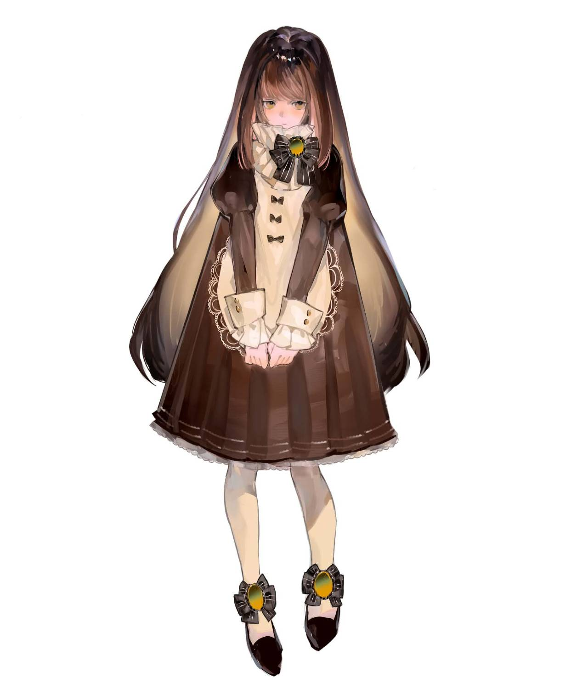

Forme I · Original Form
Pâtisserie d'antan · La Cloche
Anise
Choisir la forme — เลือกรูปแบบตัวละคร

N° 02
Profil
ข้อมูลตัวละคร
ข้อมูลพื้นฐาน · จากต้นฉบับของเจ้าของตัวละคร
Les Noms · ชื่อและอัตลักษณ์ตัวละคร
Crème Caramel · สีประจำตัว
Creme Caramel Palette — สีจากภาพ Colour Palette ของตัวละคร
N° 03
Histoire
ภูมิหลังตัวละคร
N° 04
Caractère
นิสัย · ความสามารถ · การพูด · สิ่งที่ชอบ · สิ่งที่ไม่ชอบ
นิสัย
ความสามารถ
กดที่ซองจดหมายเพื่อเปิดอ่าน
การพูด / น้ำเสียง
สิ่งที่ชอบ
สิ่งที่ไม่ชอบ
N° 05
ส่วนนี้คือการออกแบบบรรยากาศร้านของเว็บไซต์ · ทุกรายการที่เกี่ยวกับ Anise ระบุที่มาจากข้อมูลตัวละครกำกับไว้
N° 06
Parfum
กลิ่นกาย
คำอธิบายกลิ่นกายฉบับเต็มจากต้นฉบับ
N° 07
Galerie
แกลเลอรีภาพตัวละคร
ภาพทั้งหมดแสดงตามต้นฉบับ ไม่ได้ลบลายน้ำหรือแก้ไขภาพ · กดที่ภาพเพื่อดูขนาดใหญ่
N° 08
Crédits
เครดิต
Forme II · Furry Form
Adopt Design / Adopt Owner ตามข้อความที่ปรากฏบนภาพ Furry Design
Artistes · นักวาดเพิ่มเติม
Site · Website
- Website Development
- Music & Sound
- สังเคราะห์สดในเบราว์เซอร์ด้วยโค้ดของเว็บไซต์นี้ (Web Audio API) · ไม่มีไฟล์เพลงหรือเพลงที่มีลิขสิทธิ์
- Fonts
- Bodoni Moda · Jost · Noto Serif Thai · Shippori Mincho (Google Fonts, SIL Open Font License)
ข้อความจากภาพต้นฉบับ
ภาพตัวละครและการออกแบบเป็นลิขสิทธิ์ของนักวาดและเจ้าของตัวละคร ห้ามนำไปใช้โดยไม่ได้รับอนุญาต